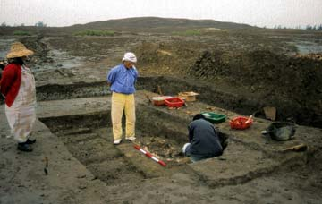
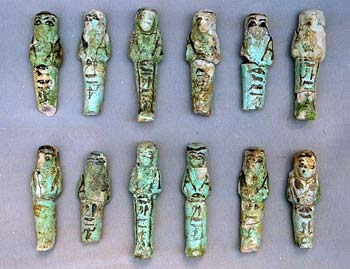
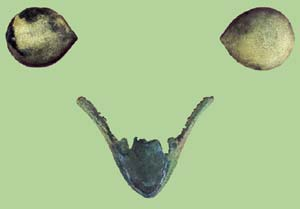
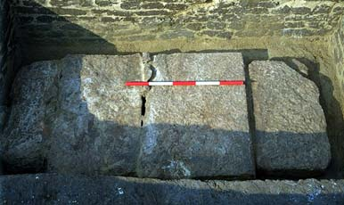
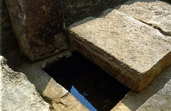
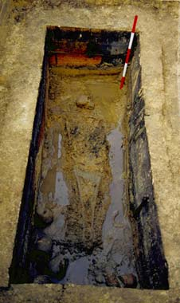
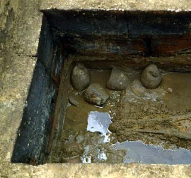
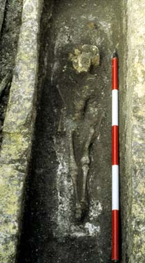

The
elite cemetery of dynasty 22 at the front of the main temple
Placing the tombs of important
individuals at the front of major temples was a practice of the Third
Intermediate Period and Late Period, the most famous examples of which
are the royal tombs at Tanis. In the 1998 and 1999 seasons at Tell el-Balamun,
a small cluster of tombs dating from the Twenty-second Dynasty was found
in front of the temple of Amun, just to the west of the axis. Three tombs
remained identifiable, although there was evidence that there may originally
have been at least two more. First to be discovered was the brick-built
tomb of a Lower Egyptian Vizier, named Iken, who had been equipped with
fairly lavish burial goods for the period. Although partly robbed in antiquity,
there remained a considerable quantity of gold leaf from the embellishment
of the coffin, much of it in the form of narrow strips from a headdress.
A pair of bronze-framed inlaid eyes were found, once fitted to the mask
of the coffin. Several amuletic figurines of deities were found on the
body, together with a granite heart scarab which bore not only the
names of Iken and his mother, but also the cartouche of King Osorkon I
(924-889 BC). This provided a welcome piece of fixed dating evidence.
To the south of the head lay three stone vases and a whole array of glazed
faience shabti-figures, which were excavated with difficulty from the
hard mud. Each figure bore the name of Iken in black paint.
|  |

|
|
Excavating the burial
of the Vizier Iken in 1998
|
Examples of the Shabtis
of Iken
|
To
the east of the tomb of Iken lay a second tomb of mud-brick, but it proved
to be empty of any burials. The interior had been dug out in the sixth
century BC and subsequently cut by a large rubbish pit of Ptolemaic date.
Further east was a third tomb containing three burials, a young adult
male (Burial 3/i), an older male (Burial 3/ii), and a child (Burial 3/iii).
The younger man lay in a stone-lined chamber which had been constructed
within the brickwork of the tomb. Unfortunately, on lifting the roofing-blocks,
the chamber was found to have been entirely flooded by subsoil water,
which had to be removed during the excavation. The body lay extended on
its back with the head to the west and the arms crossed on the chest.
Crystallised salts in the water had preserved the imprint of linen mummification
wrappings and the grain of wood from a coffin. As further evidence, two
pairs of bronze eyes from inlays in coffins were found. At the foot of
the chamber was a set of limestone Canopic Jars and a pottery vessel,
all uninscribed. This burial was separated by a narrow brick wall from
another to the north, where the body of the older man was found lying
in a limestone sarcophagus. The lid had been broken at the time of burial
and the breaks patched with stone fragments, but in spite of Ptolemaic
pits having been dug down to the top of the coffin, it had not been disturbed.
Like the burial in the first chamber, it had been damaged by water, but
once again the inlaid eyes from the coffins were recovered. More
significant was the finding of an additional pair of inlaid eyes in the
form of those of a falcon, together with a bronze falcon beak, illustrated
here. These remains show that one of the three coffins of this individual
was equipped with a falcon-faced mask, a very rare fashion known to have
been shared by only three other individuals from ancient Egypt, all belonging
to the royal family of Dynasty 22: King Osorkon II, King Sheshonq II and
the High-Priest of Amun Harsiese. In the final burial in tomb 3 at Balamun,
that of the child, the finding of another bronze beak showed that this
burial had also possessed a falcon-mask coffin. The body of the child
was contained in a rectangular limestone sarcophagus, placed at a higher
level and on a different orientation from the others. This suggests that
its addition to the tomb may have been the result of an unexpected, early
death. On the floor of the sarcophagus the imprint of the inner coffin
was visible. To merit burial so close to the temple and to have coffins
with falcon-masks, the occupants of the Balamun tombs must have been of
high status, probably priests of the temple and relatives of the royal
family of the Twenty-Second Dynasty.
|

|

|
|
Looking down on the
roof of the limestone chamber for burial 3/i
|
Chamber of Burial
3/i partly opened, showing the water within
|
|

|

|

|
|
Burial 3/i in the
stone-lined chamber
|
Burial 3/i in the
stone-lined chamber
|
The child-burial (3/iii)
|
|
|